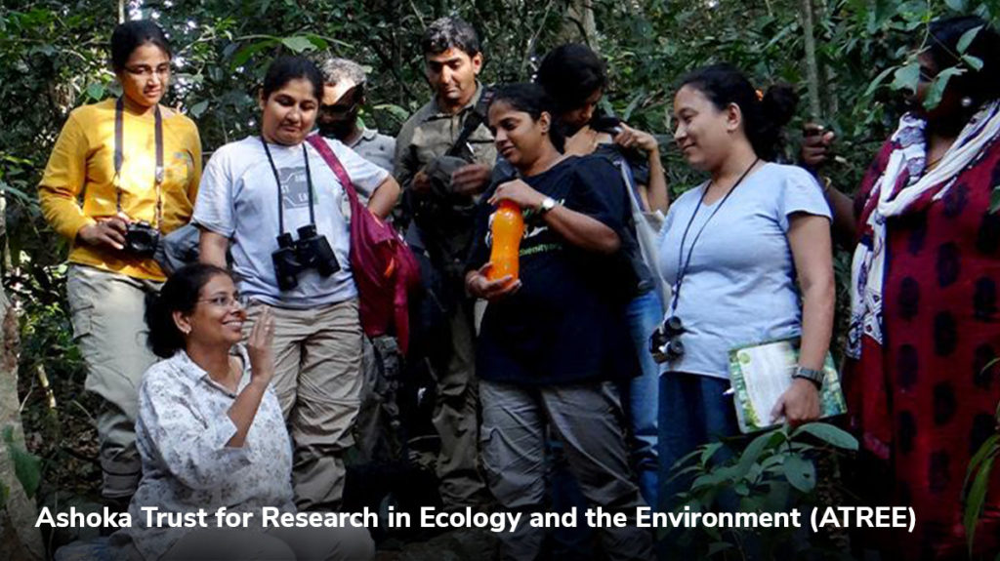
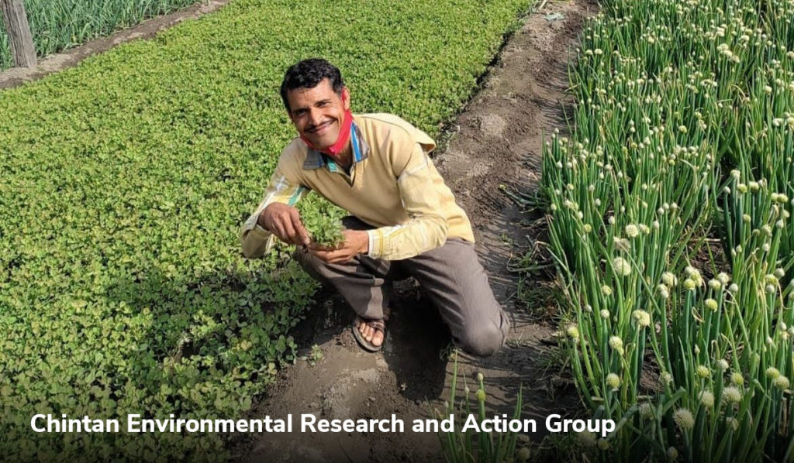
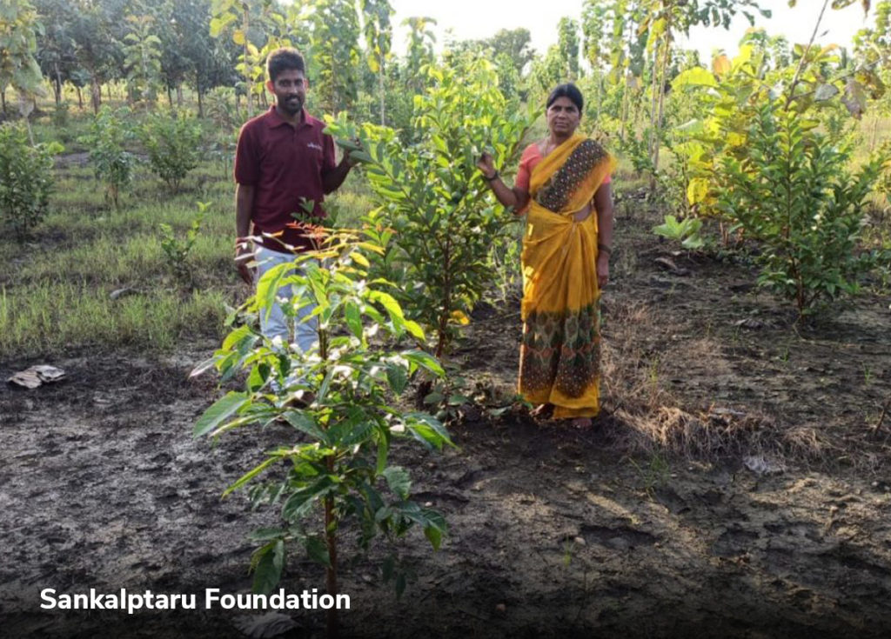
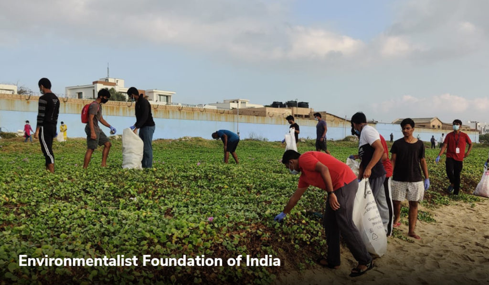

An environment-based think tank with global recognition, ATREE generates interdisciplinary knowledge to inform policy and practice towards conservation and sustainability.
The organisation has been working on social-environmental issues from local to global policy levels for almost two decades. It envisions a society committed to environmental protection and conservation on earth and stands for sustainable and socially-just development. It works closely with policymakers, environmental leaders and also builds an army of next-generation environment warriors through its academic programmes, studies and workshops. To support ATREE, you can donate here:
Donate to UsFocussed on promoting sustainable and equitable growth for every member of society, Chintan works towards ensuring responsible and sustainable consumption, thus protecting the environment. Chintan endeavours to lessen surplus waste, promote sustainable consumption and facilitate better waste management. They also raise their voice against air pollution by creating awareness. The primary purpose of promoting sustainable consumption and waste management is to provide resources for the marginalised sections of society.
As one of India’s top NGOs for environmental protection, Chintan manages over 30 tonnes of solid and electronic waste each day in and around Delhi. They partner with garbage pickers and volunteers to free the environment from such hazardous waste and create a better future for the generations to come. To support Chintan Environmental Research and Action Group, you can donate here:
Donate to ChintanThis NGO has used digital channels to protect and conserve the environment. SankalpTaru is an e-NGO, which aims at promoting tree plantations across the country. The plantation drive is run on a digital platform, allowing SankalpTaru to use innovative technologies such as GPS-tagging. Through this method, volunteers can track the progress of plantation drives. So far, millions of trees have been planted since SankapTaru’s inception in 2013.
To support SankalpTaru Foundation, you can donate here:
Donate to SankalpWorking towards wildlife conservation and habitat restoration, the foundation focuses on reviving freshwater habitats such as lakes and ponds across the country.
EFI believes that most of India’s freshwater bodies are contaminated due to human activity and their revival through scientific means is of utmost importance. EFI has revived and ecologically restored several freshwater lakes and ponds across the country since 2007 and elieves in revisiting them through community-based collaborative conservation efforts. The organisation works in over 14 Indian states, including Andhra Pradesh, Chhattisgarh, Delhi, Gujarat, Karnataka and the Jammu & Kashmir area. To support Environmentalist Foundation of India, you can donate here:
Donate to EFI